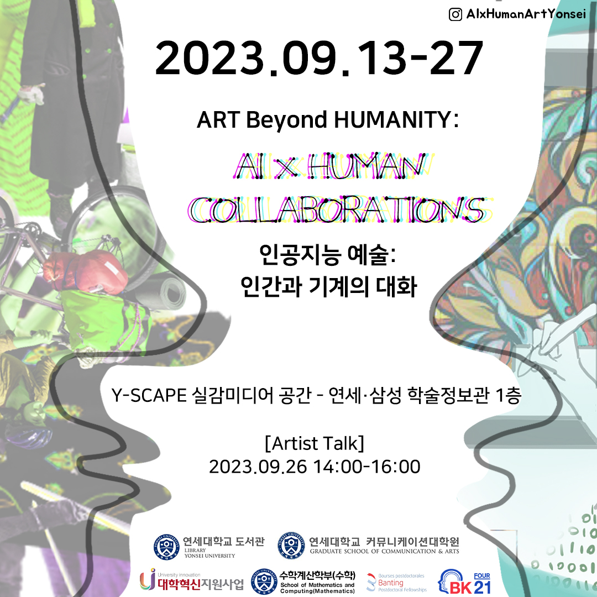
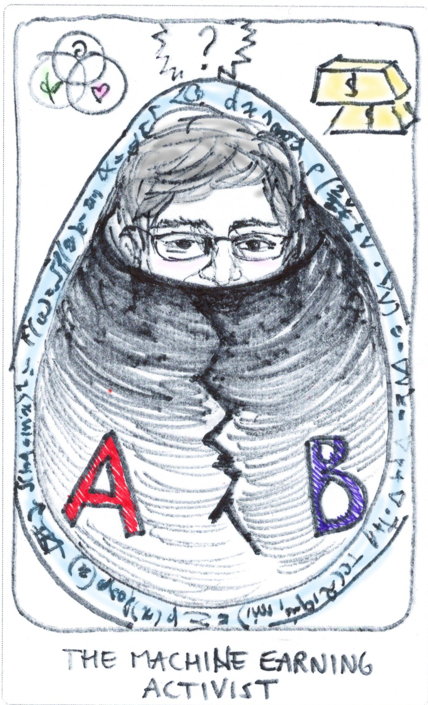

Experiments with Technology
Art beyond humanity : AI x Human collaborations
An exhibition of artwork made by humans and AI software.
Themed around human bodies and health, the project helps to explore our hopes and fears related to machine learning technologies. Exhibition at Yonsei University's library: 9:13-9:27. First floor, Y-Scape.

This project is a unique collaboration between the Graduate School of Communication & Arts and the Faculty of Mathematics and Computation, bringing together researchers across the arts and sciences at various levels in their careers,
from Postdoctoral researchers to graduate and undergraduate students.
Coordinators: Melanie Wilmink, Justus Harris and Eric Dolores Cuenca.
Official instagram: AIxHumanArtYonsei/.
Promotional text in English, Español, 대한민국- Official Poster
- Promotional images included at the art exhibition
- Video zip of the art instalation
- Video zip, Images
- Promotion of several events including the art exhibition
-
Speech by Eric Dolores Cuenca. If you need the AI generated captions, click on settings, Subtitles, choose your language and then click on CC.
Other projects :
- Book chapter "Convolutional Neural Networks Applied to Modification of Images" to appear on Handbook of Visual, Experimental and Computational Mathematics - Bridges through Data
- I am happy to announce that I got access to Dall-e, and to Stable diffusion. I'll post my experiments with stable diffusion here.
- Pi day 2022. We pair images with text. Then using AI we look for the closest image to a string related to math pi day 2022.
-
The notebook archive. Computing Order Series/Ehrhart Polynomials of posets with Mathematica. I explain how to find Ehrhart series of non series parallel posets with Mathematica In this mathematica notebook.
If you want to find the Ehrhart series of a series parallel poset,
you can probably do it by hand using few rules (explained at the end of the notebook). -
2020 Data Jam for Newspaper Navigator Library of Congress. We chose headlines related to tragedies that occurred in 1910 and selected headlines related to those tragedies to train an algorithm into learning to create fake headlines using the style and phrasing of that fixed year.
The algorithm takes a user-generated phrase negating the tragedy and completes it as if those tragedies didn't occur.
Colab Notebook -
Trained GPT2 in math arxiv papers and created fake abstracts. The algorithm can create abstracts that undergraduate students cannot recognize as fake but cannot convince PhD students, as the abstracts are grammatically correct but made no mathematical sense.

-
I've been generating this dreams that synch with the music :
link of video from the project Lucid Sonic Dreams. -
Here are some advices to optimize your code if you work with big image data.
List comprehension and for loops. - Here is a notebook that I wrote about working with GANs Notebook.
-
I participated in the project COMPUTING & THE ECONOMY IN THE ANTHROPOCENES" by the Georgia-based artist Sara Milkes;
I have a card in the “The Oracle Deck for Computing and the Economy in the Anthropocenes”, shown below.  -
Chicago-based artist Justus Harris and I won first place at Adaption 2017 in the category “Art + Data”.
Adaptation is an EU commission-funded competition and exhibit that highlights the potential of the “Internet of things”. We exhibited our work in Berlin, Germany.I coded in Maya/Blender modifications to 3d scans of people. We simulated the diseasses caused by their local water pollutants. Adaptation, Fountains